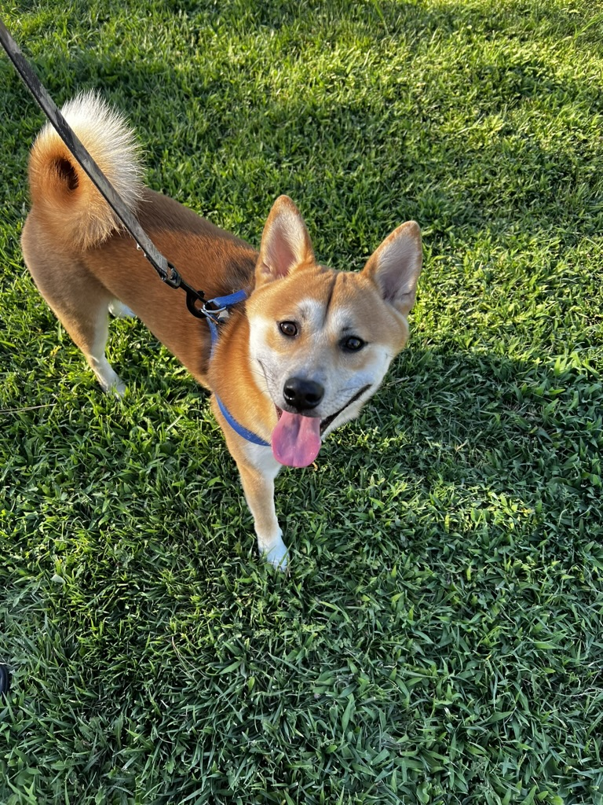
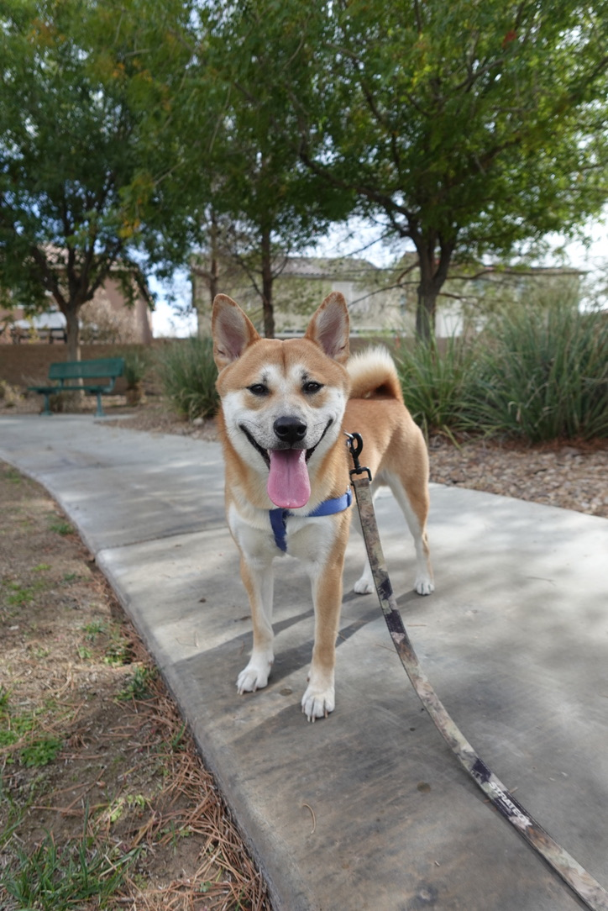
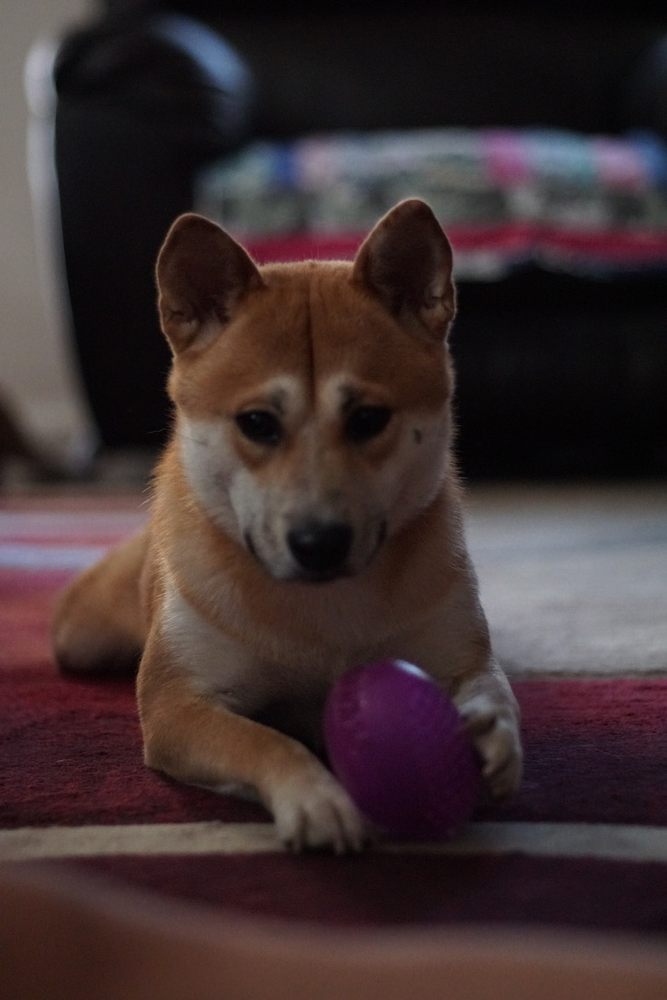
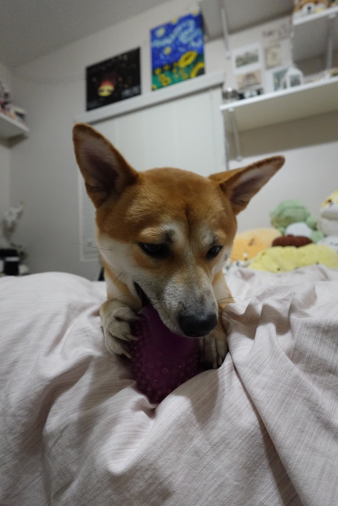
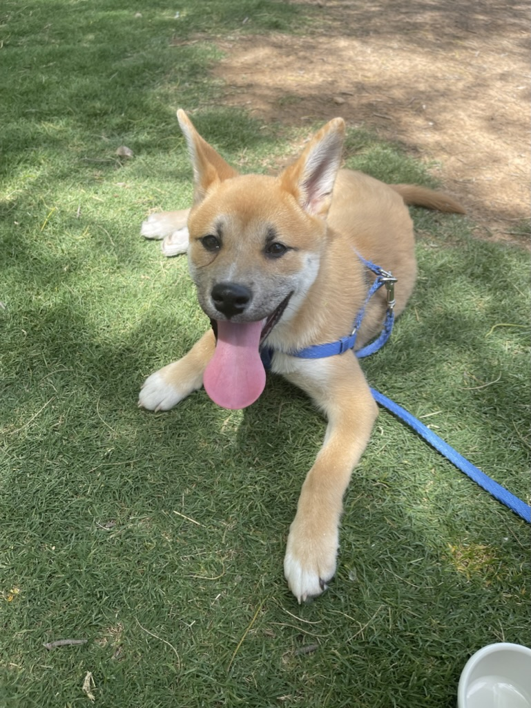
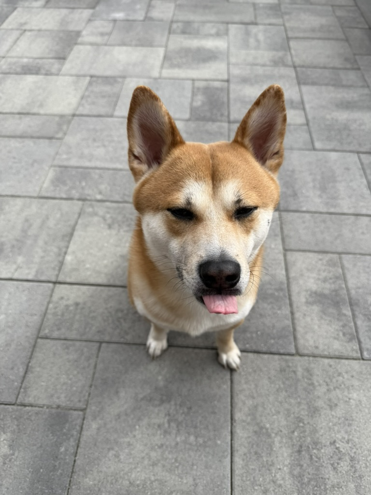
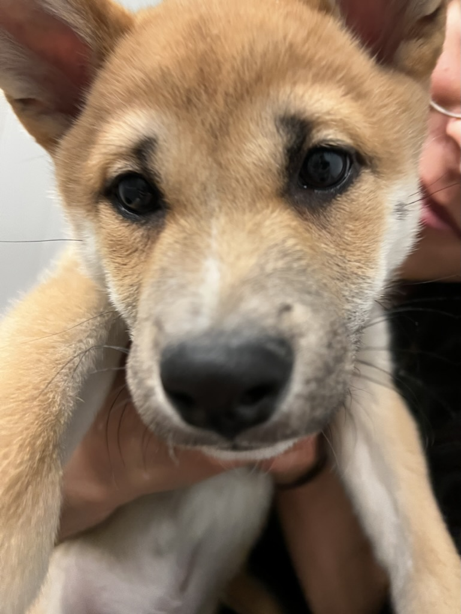

Home of The Koa Fanpage

Here at the Koa Fanpage we provide you with the most up to date and relevant Koa information. Our content includes a range of his best photos, his defining characteristics, and all the details of his vibrant personality. Our mission is to help share the story of koa and help others learn to love him as much as we do!
To learn more about Koa visit our about page.
To hear all the best stories of Koa visit our blog page.
Gallery of Koa





